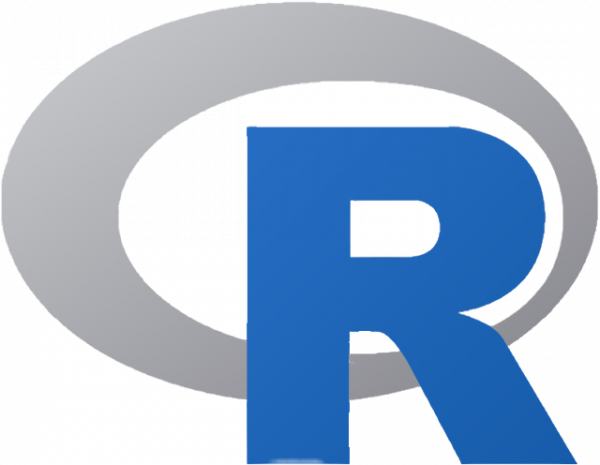

C# é uma linguagem de programação orientada a objetos e orientada a componentes. C# fornece construções de linguagem para dar suporte diretamente a esses conceitos, tornando C# uma linguagem natural para criação e uso de componentes de software.Java é uma linguagem de programação amplamente usada para codificar aplicações Web. Ela tem sido uma escolha popular entre os desenvolvedores há mais de duas décadas, com milhões de aplicações Java em uso hoje. Java é uma linguagem multiplataforma, orientada a objetos e centrada em rede que pode ser usada como uma plataforma em si. É uma linguagem de programação rápida, segura e confiável para codificar tudo, desde aplicações móveis e software empresarial até aplicações de big data e tecnologias do servidor

Linguagem R é uma linguagem e ambiente para computação estatística e gráficos. É um projeto GNU que é semelhante ao idioma e ao ambiente S desenvolvido na Bell Laboratories (anteriormente AT&T, agora Lucent Technologies) por John Chambers e colegas. R pode ser considerado uma implementação diferente de S.O Python é uma linguagem de programação amplamente usada em aplicações da Web, desenvolvimento de software, ciência de dados e machine learning (ML). Os desenvolvedores usam o Python porque é eficiente e fácil de aprender e pode ser executada em muitas plataformas diferentes.